SECCIÓN 2D
SUSPENSIÓN TRASERA
Precaución: Desconecte el cable negativo de la batería antes de desmontar o instalar cualquier unidad eléctrica o cuando exista la posibilidad de que una herramienta o equipo pueda entrar en contacto con bornes eléctricos expuestos. La desconexión de dicho cable ayudará a evitar lesiones personales y daños al vehículo. La llave de contacto debe estar en la posición LOCK a menos que se indique lo contrario.
ESPECIFICACIONES
Especificaciones de apriete
| Aplicación | N•m | Lb-pie |
| Tornillos que unen el soporte del módulo de tracción a dicho módulo | 125 | 92 |
| Tornillos que unen el soporte del módulo de tracción al conjunto del soporte | 125 | 92 |
| Tornillo hexagonal que une el tope de la suspensión al panel de la carrocería | 15 | 11 |
| Tornillo de la mangueta a la palanca de control inferior | 160 | 118 |
| Tornillo de la mangueta a la articulación de la convergencia/divergencia | 160 | 118 |
| Tornillo de la mangueta a la palanca portadora posterior | 110 | 81 |
| Tornillo de la mangueta a la palanca de control superior | 160 | 118 |
| Tornillo que une la palanca de control inferior al conjunto del soporte | 110 | 81 |
| Tornillo del amortiguador inferior | 110 | 81 |
| Clip de cable de freno de estacionamiento | 25 | 18 |
| Tuerca que sujeta la articulación de barra estabilizadora a la palanca de control inferior | 15 | 11 |
| Tuerca que sujeta la articulación a la barra estabilizadora | 57 | 42 |
| Tornillo de la abrazadera de la barra estabilizadora | 70 | 52 |
| Tornillos del soporte a la carrocería | 170 | 125 |
| Tornillos que unen la articulación de convergencia/divergencia al bastidor | 160 | 118 |
| Tornillos que unen el soporte de la palanca portadora posterior a la carrocería | 110 | 81 |
| Tornillo que une el casquillo de la palanca portadora posterior al soporte | 160 | 118 |
| Tornillos que unen la palanca de control superior al conjunto del soporte | 160 | 118 |
| Tornillos amortiguadores superiores | 110 | 81 |
| Tornillos de fijación de rodamientos/cubo de rueda - traseros | 84 | 62 |
| Tornillos que unen los rodamientos/cubo de rueda a la mangueta | 130 | 96 |
| Tuerca de vástago del árbol de accionamiento de la rueda | 205 | 151 |
DIAGNÓSTICO
Comprobación de fricción excesiva
Compruebe si hay fricción excesiva en la suspensión trasera de la siguiente manera:
- Pida ayuda a otro técnico para levantar el parachoques trasero, levantando el vehículo lo más posible. Suelte lentamente el parachoques, dejando que el vehículo adopte su altura normal de suspensión.
- Mida la distancia del suelo al centro del parachoques.
- Empuje hacia abajo el parachoques, suéltelo poco a poco y deje que el vehículo adopte su altura normal de suspensión.
- Mida la distancia del suelo al centro del parachoques.
La diferencia entre las dos medidas debe ser inferior a 12,7 mm (0,50 pulg.). Si la diferencia sobrepasa este límite, revise las palancas de control en busca de daños o desgaste.
Amortiguador
Los amortiguadores disponen de función de autonivelado. Esta función sirve para ajustar la altura constante del vehículo en distintas condiciones de carga. El amortiguador no se puede reparar.
Amortiguador débil
| Comprobaciones | Medida |
| Compruebe la presión de los neumáticos. | Ajuste la presión de los neumáticos según las especificaciones. |
| Compruebe las condiciones de carga a las que se conduce normalmente el vehículo. | Consulte con el propietario para confirmar que éste comprende lo que significa condiciones normales de carga. |
| Compruebe la eficacia de compresión y rebote del amortiguador. | Mueva rápidamente hacia arriba y hacia abajo el parachoques, en la esquina más próxima al amortiguador que se esté comprobando. Compare la compresión y el rebote con los de otro vehículo similar que tenga una calidad de suspensión aceptable. Sustituya el amortiguador si fuera necesario. |
Los amortiguadores hacen ruido
| Comprobaciones | Medida |
| Compruebe si hay fijaciones dañadas o flojas. | Apriete el amortiguador. Sustituya el amortiguador si fuera necesario. |
| Compruebe la eficacia de compresión y rebote del amortiguador. | Mueva rápidamente hacia arriba y hacia abajo el parachoques, en la esquina más próxima al amortiguador que se esté comprobando. Compare la compresión y el rebote con los de otro vehículo similar que tenga una calidad de suspensión aceptable. Sustituya el amortiguador si fuera necesario. |
Fugas
| Comprobaciones | Medida |
| Compruebe si hay un ligero rastro de líquido. | El amortiguador está bien. |
| Compruebe el cubrejuntas en el amortiguador totalmente extendido. | Sustituya el amortiguador de absorción de energía. |
| Compruebe si hay una cantidad excesiva de líquido en el amortiguador. | Sustituya el amortiguador de absorción de energía. |
LOCALIZADOR DE COMPONENTES
Suspensión trasera
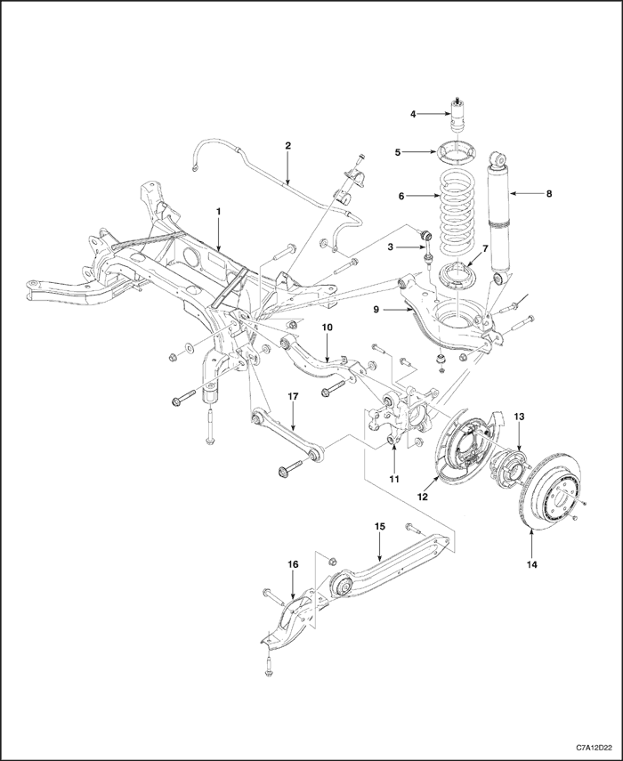


- Soporte
- Barra estabilizadora
- Articulación de la barra estabilizadora
- Tope de suspensión del muelle
- Asiento superior del muelle
- Muelle helicoidal
- Asiento inferior del muelle
- amortiguador trasero
- Palanca de control inferior
- Palanca de control superior
- Mangueta trasera
- Conjunto de soporte de zapata y placa de apoyo
- Unidad del cubo trasero
- Disco trasero
- Palanca portadora posterior
- Soporte de palanca portadora posterior
- Articulación de convergencia/divergencia trasera
MANTENIMIENTO Y REPARACIÓN
servicio con vehículo en marcha
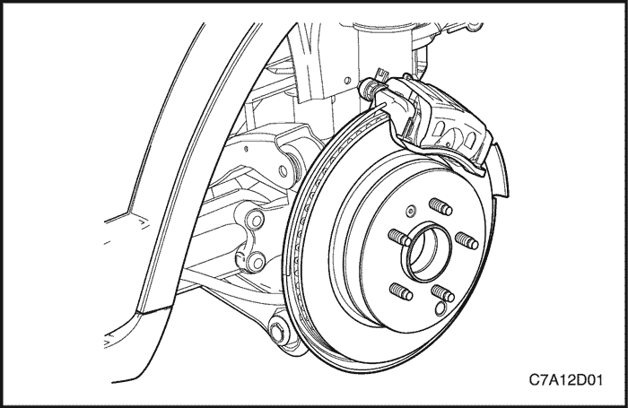
Conjunto de rodamientos/cubo de rueda - trasero
Procedimiento de desmontaje
- Desmonte el disco y el conjunto de la pinza de freno trasero. Consulte la Sección 4E, Frenos traseros.
- En vehículos con tracción a las cuatro ruedas, quite la tuerca del vástago del árbol de accionamiento de la rueda.
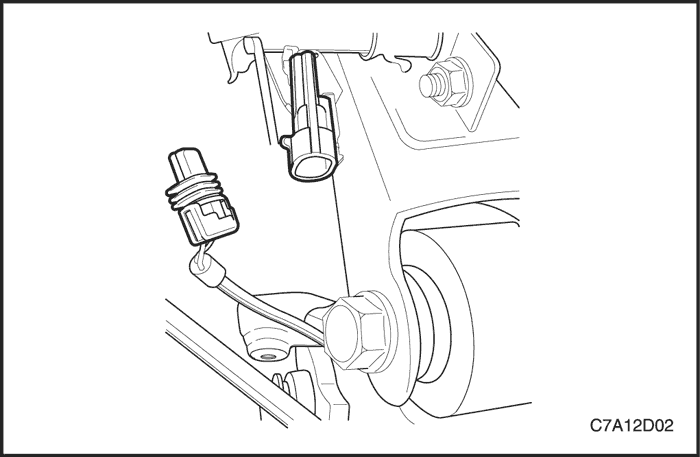
- Desenchufe el conector eléctrico del sensor de velocidad de la rueda.
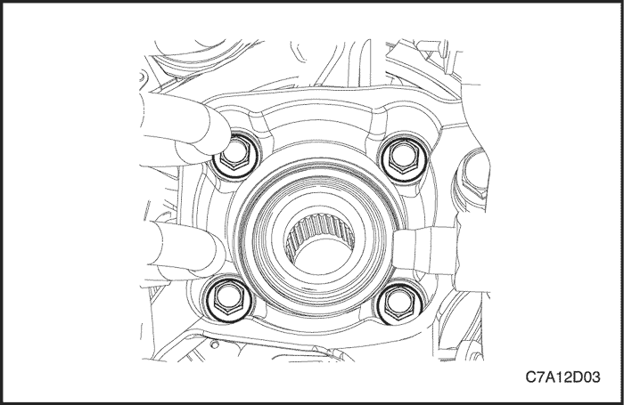
Importante: No dañe el retén de la junta del eje de accionamiento de la rueda.
- Sujete el eje de accionamiento de la rueda con un alambre de mecánico pesado o equivalente.
- Quite los tornillos de fijación de los rodamientos/cubo de la rueda.
- Desmonte el conjunto de rodamientos/cubo de rueda de la mangueta de suspensión.
- Desmonte el sensor de velocidad de la rueda del conjunto de rodamientos/cubo de rueda. Consulte la sección 4F, Sistema antibloqueo de frenos.
procedimiento de montaje
- Monte el sensor de velocidad de la rueda en el conjunto de rodamientos/cubo de rueda.
- Monte el conjunto de rodamientos/cubo de rueda en la mangueta de suspensión.
- Coloque los tornillos de fijación de los rodamientos/cubo de la rueda.
Apretar
Apriete los tornillos hasta 84 N•m (62 lb-pie).
- En vehículos con tracción a las cuatro ruedas, coloque la tuerca del vástago del árbol de accionamiento de la rueda.
Apretar
Apriete la tuerca hasta 205 N•m (151 lb-pie).
- Si dispone del mismo, pase el cableado eléctrico del sensor de velocidad de la rueda por la placa de apoyo y acople el pasacables.
- Enchufe el conector eléctrico del sensor de velocidad de la rueda.
- Monte el tambor de freno trasero.
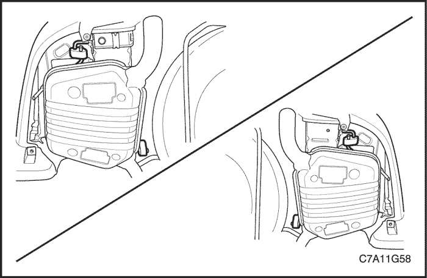
Soporte
Procedimiento de desmontaje
- Levante y sujete el vehículo.
- Desmonte las ruedas y neumáticos. Consulte la Sección 2E, Neumáticos y ruedas.
- Desmonte el silenciador del escape y el conjunto del resonador. Consulte la Sección 1G2/1G3, Sistema de escape del motor.
- Desmonte la barra estabilizadora. Consulte el apartado "Barra estabilizadora" de esta sección.
- Desmonte del conjunto del soporte la palanca de control inferior.
- Desconecte del conjunto del soporte la palanca de control superior.
- Desconecte la articulación de convergencia/divergencia del conjunto del soporte. Consulte el apartado "Articulación de convergencia/divergencia" de esta sección.
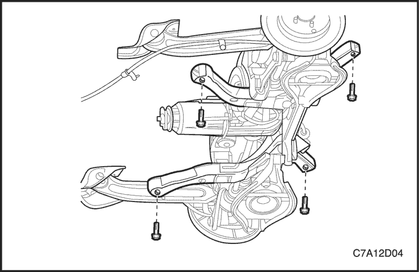
- Quite los tornillos que unen el soporte a la carrocería y desmonte el conjunto del soporte del vehículo.
procedimiento de montaje
- Coloque el conjunto del soporte en el vehículo.
- Ponga los tornillos que unen el conjunto del soporte a la carrocería.
Apretar
Apriete los tornillos que unen el conjunto del soporte a la carrocería hasta 170 N•m (125 lb-pie).
- Conecte la articulación de convergencia/divergencia al conjunto del soporte. Consulte el apartado "Articulación de convergencia/divergencia" de esta sección.
- Conecte la palanca de control superior al conjunto del soporte.
- Monte la palanca de control inferior al conjunto del soporte.
- Monte la barra estabilizadora. Consulte el apartado "Barra estabilizadora trasera" de esta sección.
- Monte el silenciador del escape y el conjunto del resonador. Consulte la Sección 1G2/1G3, Sistema de escape del motor.
- Monte las ruedas y neumáticos. Consulte la Sección 2E, Neumáticos y ruedas.
- Baje el vehículo.
- Compruebe la alineación de las ruedas traseras. Consulte la Sección 2B, Alineación de las ruedas.
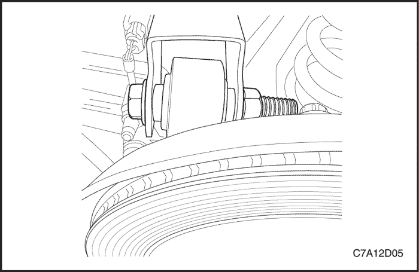
Mangueta trasera
Procedimiento de desmontaje
- Levante y sujete el vehículo.
- Desmonte la rueda y el neumático. Consulte la Sección 2E, Neumáticos y ruedas.
- Desmonte el conjunto de rodamientos/cubo de la rueda.
- Quite el tornillo y la tuerca que sujetan la palanca de control superior a la mangueta.
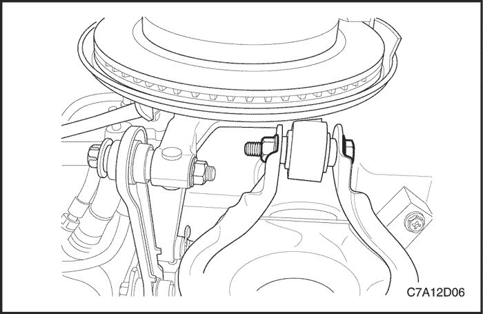
- Quite el tornillo y la tuerca que sujetan la palanca de control inferior a la mangueta.
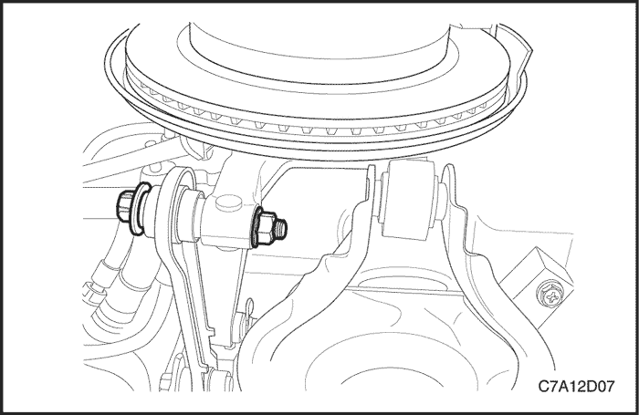
- Quite el tornillo y la tuerca que sujetan la articulación de convergencia/divergencia a la mangueta.
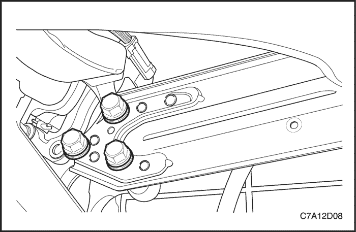
- Quite los tornillos que unen la hoja portadora posterior a la mangueta.
- Desmonte la mangueta del vehículo.
procedimiento de montaje
- Monte la mangueta en la palanca de control inferior. Coloque sin apretar el tornillo y la tuerca.
- Monte la mangueta en la palanca de control superior. Coloque sin apretar el tornillo y la tuerca.
- Monte la mangueta en la articulación de convergencia/divergencia. Coloque sin apretar el tornillo y la tuerca.
- Monte la mangueta en la hoja portadora posterior. Coloque sin apretar el tornillo y la tuerca.
- Apriete los tornillos y las tuercas en el siguiente orden:
Apretar
- Apriete el tornillo y la tuerca que sujetan la mangueta a la palanca de control inferior hasta 160 N•m (118 lb-pie).
- Apriete el tornillo y la tuerca que sujetan la mangueta a la palanca de control superior hasta 160 N•m (118 lb-pie).
- Apriete el tornillo y la tuerca que sujetan la mangueta a la articulación de la convergencia/divergencia hasta 160 N•m (118 lb-pie).
- Apriete los tornillos que unen la mangueta a la hoja portadora posterior hasta 110 N•m (81 lb-pie).
- Monte el conjunto de rodamientos/cubo de la rueda.
- Monte la rueda y el neumático.
- Baje el vehículo.
- Efectúe una alineación de las ruedas del vehículo. Consulte la Sección 2B, Alineación de las ruedas.
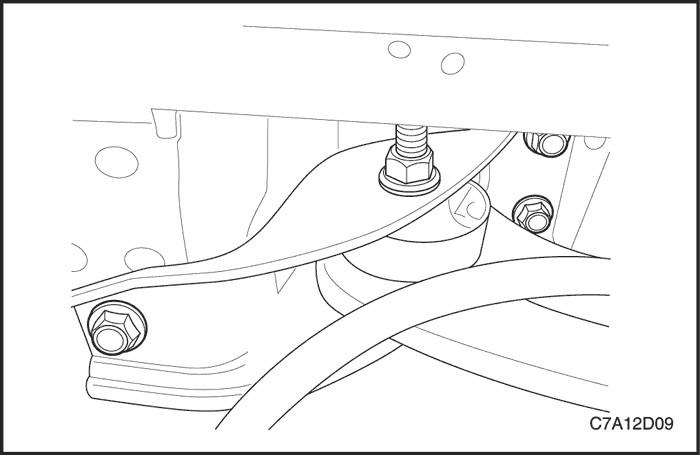
Palanca de control superior trasera
Procedimiento de desmontaje
- Levante y sujete el vehículo.
- Quite los tornillos que unen el soporte de la palanca portadora posterior a la carrocería.
- Si procede, retire el cableado del freno del sistema antibloqueo de frenos (ABS) de la palanca de control superior.
- Quite el tornillo y la tuerca que sujetan la palanca de control superior a la mangueta.
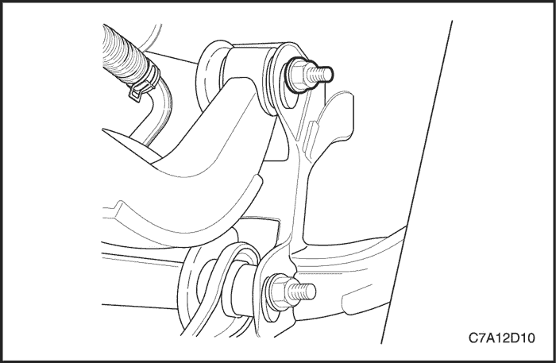
- Quite el tornillo y la tuerca que sujetan la palanca de control superior al soporte.
- Desmonte la palanca de control superior.
procedimiento de montaje
- Monte la palanca de control superior en la mangueta.
- Coloque sin apretar el tornillo y la tuerca que sujetan la palanca de control superior a la mangueta.
- Coloque el tornillo y la tuerca de leva que sujetan la palanca de control superior al soporte.
- Apriete el tornillo y la tuerca que sujetan la palanca de control superior a la mangueta.
Apretar
Apriete la tuerca y el tornillo hasta 160 N•m (118 lb-pie).
- Apriete el tornillo que une la palanca de control superior al soporte.
Apretar
Apriete el tornillo que une la palanca de control superior al soporte hasta 160 N•m (118 lb-pie).
- Si procede, coloque el cableado del ABS en la palanca de control superior.
- Empuje hacia arriba la palanca portadora posterior y coloque sin apretar el tornillo delantero.
- Use un botador para alinear los tornillos restantes.
Apretar
Apriete los tornillos que unen el soporte de la palanca portadora posterior a la carrocería hasta 110 N•m (81 lb-pie).
- Baje el vehículo.
- Compruebe la alineación de las ruedas traseras. Consulte la Sección 2B, Alineación de las ruedas.
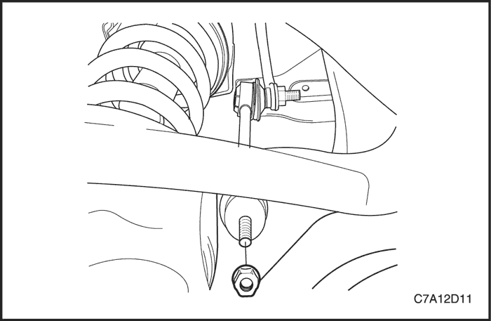
Palanca de control inferior trasera
Procedimiento de desmontaje
- Levante y sujete el vehículo.
- Desmonte la rueda y el neumático.
- Quite la tuerca que sujeta la articulación de la barra estabilizadora a la palanca de control inferior.
- Quite los tornillos que sujetan el soporte de la palanca portadora posterior a los bajos de la carrocería.
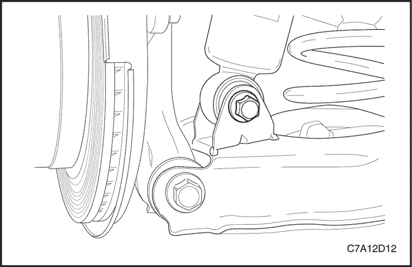
- Coloque un soporte de gato de rosca debajo de la palanca de control inferior.
- Con la ayuda del soporte de gato, comprima el muelle helicoidal.
- Quite el tornillo del amortiguador inferior.
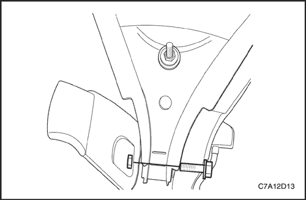
- Afloje el tornillo que une la palanca de control inferior al bastidor de soporte.
- Quite el tornillo y la tuerca que sujetan la palanca de control inferior a la mangueta.
Precaución: Baje el soporte de gato despacio, de lo contrario, el técnico podría sufrir graves lesiones producidas por la fuerza del muelle comprimido.
- Desmonte la palanca de control inferior.
procedimiento de montaje
- Coloque el la palanca de control inferior en el soporte y apriete con la mano el tornillo y la tuerca.
- Coloque el muelle con los aisladores de goma en el vehículo.
- Use un soporte de gato de rosca para comprimir el muelle.
- Monte la mangueta en la palanca de control inferior.
Apretar
Apriete el tornillo y la tuerca que sujetan la palanca de control inferior a la mangueta hasta 160 N•m (118 lb-pie).
- Apriete el tornillo y la tuerca que sujetan la palanca de control inferior al soporte.
Apretar
Apriete el tornillo y la tuerca hasta 110 N•m (81 lb-pie).
- Monte el amortiguador en la palanca de control inferior.
Apretar
Apriete el tornillo del amortiguador inferior hasta 110 N•m (81 lb-pie).
- Retire el soporte de gato.
- Monte la articulación de la barra estabilizadora en la palanca de control inferior.
Apretar
Apriete la tuerca hasta 15 N•m (11 lb-pie).
- Empuje la palanca portadora posterior hacia arriba para alinear el tornillo del soporte a la carrocería.
- Use un botador para facilitar la alineación del soporte y colocar los tornillos restantes.
Apretar
Apriete los tornillos que sujetan el soporte a la carrocería hasta 110 N•m (81 lb-pie).
- Monte la rueda y el neumático.
- Baje el vehículo.
- Compruebe la alineación de las ruedas traseras. Consulte la Sección 2B, Alineación de las ruedas.
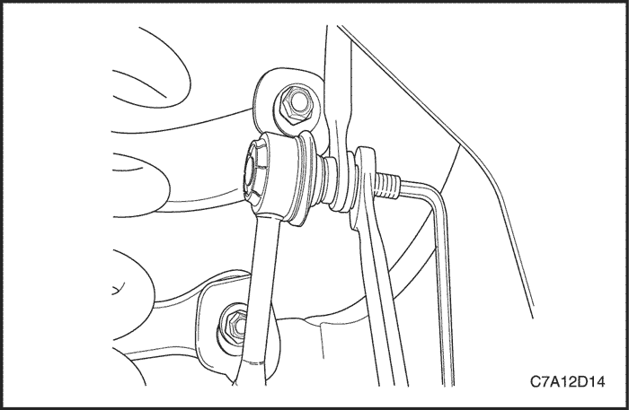
Procedimiento de desmontaje
- Levante y sujete el vehículo.
- Quite la tuerca que une la articulación de la barra estabilizadora a dicha barra.
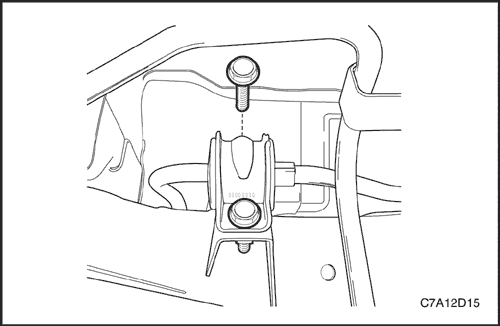
- Quite los tornillos de la abrazadera de la barra estabilizadora.
- Desenganche la barra estabilizadora de los espárragos de la rótula de la articulación, al tiempo que desmonta la barra estabilizadora del vehículo.
procedimiento de montaje
- Monte la barra estabilizadora en el vehículo al tiempo que coloca las articulaciones en dicha barra.
- Coloque los tornillos de la abrazadera de la barra estabilizadora.
Apretar
Apriete los tornillos hasta 70 N•m (52 lb-pie).
- Coloque la tuerca que sujeta la articulación de la barra estabilizadora a dicha barra.
Apretar
Apriete la tuerca hasta 57 N•m (42 lb-pie).
- Baje el vehículo.
Procedimiento de desmontaje
- Levante y sujete el vehículo.
- Quite los tornillos de la abrazadera de la barra estabilizadora.
- Desmonte los aisladores de la barra estabilizadora.
procedimiento de montaje
- Monte los aisladores en la barra estabilizadora.
- Coloque los tornillos de la abrazadera de la barra estabilizadora.
Apretar
Apriete los tornillos hasta 70 N•m (52 lb-pie).
- Baje el vehículo.
Procedimiento de desmontaje
- Levante y sujete el vehículo.
- Afloje los tornillos de la abrazadera de la barra estabilizadora.
- Quite la tuerca que une la articulación de la barra estabilizadora a dicha barra.
Importante: Al desconectar la articulación de la barra estabilizadora, sujete la articulación con una llave para evitar que gire.
- Quite la tuerca que sujeta la articulación de la barra estabilizadora a la palanca de control inferior.
- Desmonte la articulación de la barra estabilizadora del vehículo.
procedimiento de montaje
- Coloque la articulación de la barra estabilizadora a través de la palanca de control inferior.
Importante: Al conectar la articulación de la barra estabilizadora, sujete la articulación con una llave para evitar que gire.
- Coloque la tuerca que sujeta la articulación de la barra estabilizadora a la palanca de control.
Apretar
Apriete la tuerca hasta 15 N•m (11 lb-pie).
- Coloque la tuerca que sujeta la articulación de la barra estabilizadora a dicha barra.
Apretar
Apriete la tuerca hasta 57 N•m (42 lb-pie).
- Coloque los tornillos de la abrazadera de la barra estabilizadora.
Apretar
Apriete los tornillos hasta 70 N•m (52 lb-pie).
- Baje el vehículo.
amortiguador trasero
Procedimiento de desmontaje
- Levante y sujete el vehículo.
- Quite el tornillo del amortiguador inferior.
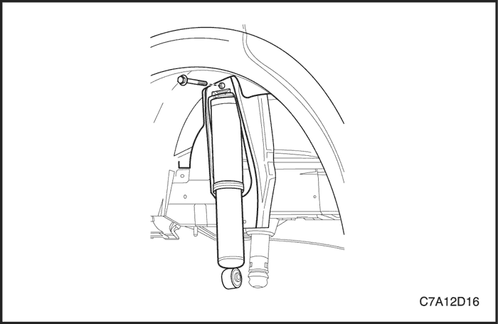
- Quite el tornillo del amortiguador superior.
- Desmonte el amortiguador del vehículo.
procedimiento de montaje
- Monte el amortiguador en el vehículo.
- Coloque el tornillo del amortiguador superior.
Apretar
Apriete el tornillo hasta 110 N•m (81 lb-pie).
- Coloque el tornillo del amortiguador inferior.
Apretar
Apriete el tornillo hasta 110 N•m (81 lb-pie).
- Baje el vehículo.
Aisladores/muelle helicoidal trasero
Procedimiento de desmontaje
- Levante y sujete el vehículo.
- Desmonte la rueda y el neumático.
Importante: Sujete la articulación con una llave al quitar la tuerca.
- Quite la tuerca que sujeta la articulación de la barra estabilizadora a la palanca de control inferior.
- Quite los tornillos que sujetan el soporte de la palanca portadora posterior a los bajos de la carrocería.
- Coloque un soporte de gato de rosca debajo de la palanca de control inferior.
- Con la ayuda del soporte de gato, comprima el muelle helicoidal.
- Quite el tornillo del amortiguador inferior.
- Afloje el tornillo que une la palanca de control inferior al bastidor de soporte.
- Quite el tornillo y la tuerca que sujetan la palanca de control inferior a la mangueta.
- Baje la palanca de control para descargar el muelle helicoidal.
- Desmonte el muelle helicoidal y los aisladores.
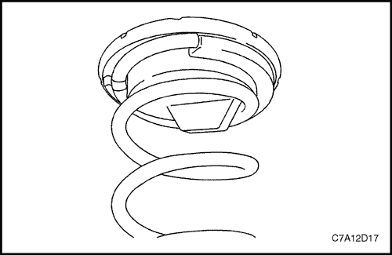
procedimiento de montaje
- Acople totalmente en el muelle helicoidal los aisladores superior e inferior del muelle.
- Coloque el muelle con los aisladores de goma en el vehículo.
- Use un soporte de gato de rosca para comprimir el muelle.
- Monte la mangueta en la palanca de control inferior.
Apretar
Apriete el tornillo que une la palanca de control inferior a la mangueta hasta 160 N•m (118 lb-pie).
- Apriete el tornillo y la tuerca que sujetan la palanca de control inferior al soporte.
Apretar
Apriete el tornillo hasta 110 N•m (81 lb-pie).
- Monte el amortiguador en la palanca de control inferior.
Apretar
Apriete el tornillo del amortiguador inferior hasta 110 N•m (81 lb-pulg.).
- Retire el soporte de gato.
Importante: Sujete la articulación con una llave al colocar la tuerca.
- Monte la articulación de la barra estabilizadora en la palanca de control inferior.
Apretar
Apriete la tuerca hasta 15 N•m (11 lb-pulg.).
- Empuje la palanca portadora posterior hacia arriba para alinear el tornillo del soporte a la carrocería.
- Use un botador para facilitar la alineación del soporte y colocar los tornillos restantes.
Apretar
Apriete los tornillos del soporte a la carrocería hasta 110 N•m (81 lb-pulg).
- Monte la rueda y el neumático.
- Baje el vehículo.
- Compruebe la alineación de las ruedas traseras. Consulte la Sección 2B, Alineación de las ruedas.
palanca portadora posterior
Procedimiento de desmontaje
- Levante y sujete el vehículo.
- Quite los tornillos que unen el soporte de la palanca portadora posterior a la carrocería.
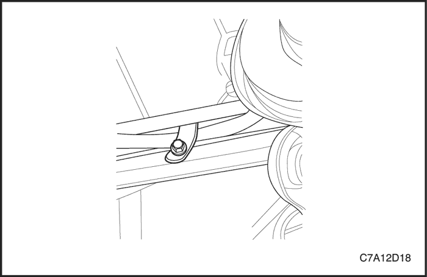
- Quite el tornillo y la tuerca que sujetan el casquillo de la palanca portadora posterior al soporte.
- Quite de la palanca portadora posterior el clip del cable del freno de estacionamiento.
- Quite los tornillos que unen la palanca portadora posterior a la mangueta.
- Desmonte la palanca portadora posterior.
procedimiento de montaje
- Monte la palanca portadora posterior en la mangueta.
Apretar
Apriete los tornillos hasta 110 N•m (81 lb-pie).
- Monte en la palanca portadora posterior su soporte.
- Coloque sin apretar el tornillo y la tuerca que sujetan el casquillo de la palanca portadora posterior al soporte.
- Empuje hacia arriba la palanca portadora posterior y coloque sin apretar el tornillo delantero.
- Use un botador para alinear los tornillos restantes.
Apretar
Apriete los tornillos que unen el soporte de la palanca portadora posterior a la carrocería hasta 110 N•m (81 lb-pie).
- Apriete el tornillo y la tuerca que sujetan el casquillo de la palanca portadora posterior al soporte.
Apretar
Apriete el tornillo hasta 160 N•m (118 lb-pie).
- Coloque el clip del cable del freno de estacionamiento.
Apretar
Apriete el tornillo hasta 25 N•m (18 lb-pulg.).
- Baje el vehículo.
Soporte de palanca portadora posterior
Procedimiento de desmontaje
- Levante y sujete el vehículo.
- Quite de la palanca portadora posterior el clip del freno de estacionamiento.
- Quite los tornillos que unen el soporte a los bajos de la carrocería.
- Quite el tornillo y la tuerca que sujetan la palanca portadora posterior al soporte.
- Desmonte el soporte.
procedimiento de montaje
- Monte el soporte en la palanca portadora posterior.
- Coloque sin apretar el tornillo y la tuerca que sujetan el soporte de la palanca portadora posterior.
- Empuje la palanca portadora posterior hacia arriba para alinear el tornillo del soporte a la carrocería.
- Use un botador para facilitar la alineación del soporte y colocar los tornillos restantes.
Apretar
Apriete los tornillos que sujetan el soporte a la carrocería hasta 110 N•m (81 lb-pie).
- Coloque el clip del cable del freno de estacionamiento en la palanca portadora posterior.
Apretar
Apriete el tornillo hasta 25 N•m (18 lb-pie).
- Apriete el tornillo que une el soporte al casquillo de la palanca portadora posterior.
Apretar
Apriete la tuerca y el tornillo hasta 160 N•m (118 lb-pie).
- Baje el vehículo.
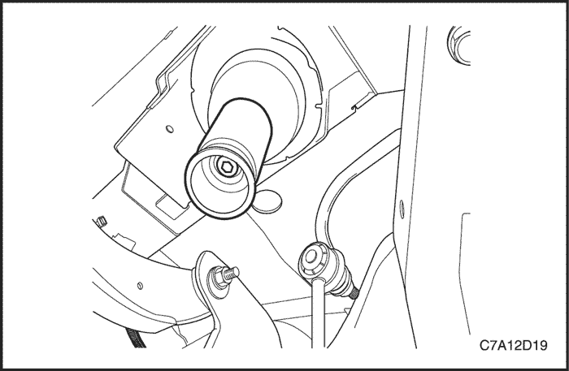
Tope de suspensión del muelle
Procedimiento de desmontaje
- Levante y sujete el vehículo.
- Desmonte el muelle helicoidal. Consulte el apartado "Aisladores/muelle helicoidal trasero" de esta sección.
- Desmonte el tope de suspensión.
procedimiento de montaje
- Monte el tope de suspensión en el panel de la carrocería.
- Apriete el tornillo que une el tope de suspensión al panel de la carrocería.
Apretar
Apriete el tornillo hasta 15 N•m (11 lb-pie).
- Baje el vehículo.
- Compruebe la alineación de las ruedas traseras. Consulte la Sección 2B, Alineación de las ruedas.
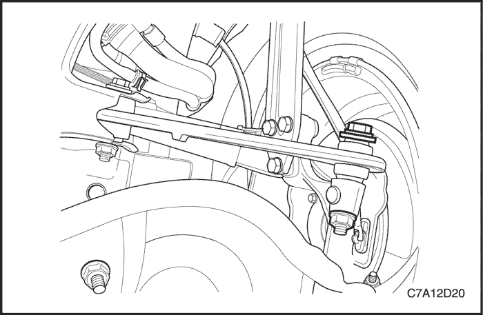
Articulación de convergencia/divergencia
Procedimiento de desmontaje
- Levante y sujete el vehículo.
- Quite la tuerca y el tornillo que sujetan la articulación de convergencia/divergencia a la mangueta.
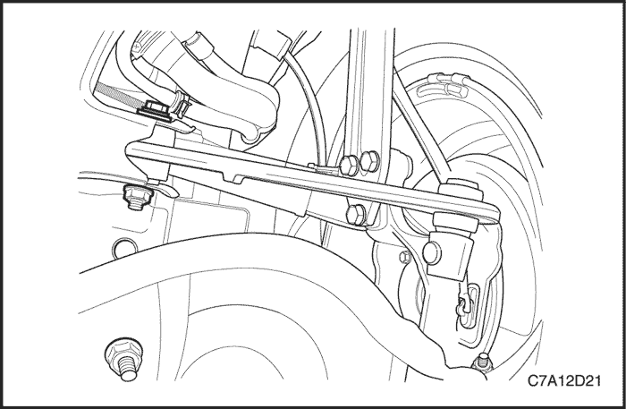
- Quite el tornillo y la tuerca que sujetan la articulación de convergencia/divergencia al soporte.
- Desmonte la articulación de convergencia/divergencia del vehículo.
procedimiento de montaje
- Monte la articulación de la barra estabilizadora al conjunto del soporte.
Importante:
- Coloque el tornillo con la cabeza orientada hacia la parte delantera del vehículo.
- Coloque la tuerca de leva en las misma posición que en la palanca de control superior.
- Monte la articulación de convergencia/divergencia en la mangueta.
Apretar
Apriete el tornillo hasta 160 N•m (118 lb-pie).
- Apriete el tornillo que une la articulación de convergencia/divergencia al soporte.
Apretar
Apriete el tornillo hasta 160 N•m (118 lb-pie).
- Baje el vehículo.
- Compruebe la alineación de las ruedas traseras. Consulte la Sección 2B, Alineación de las ruedas.
DESCRIPCIÓN GENERAL Y FUNCIONAMIENTO DEL SISTEMA
Suspensión trasera
El sistema de la suspensión trasera de este vehículo es de articulación independiente. El sistema de la suspensión trasera realiza las siguientes funciones:
- Mantiene la relación del eje trasero con la carrocería.
- Controla la reacción de torsión al acelerar y frenar.
Los muelles helicoidales traseros se retienen entre el asiento del muelle y la palanca de control inferior. Los aisladores de goma aíslan el muelle helicoidal tanto en la parte inferior como superior.
El sistema de suspensión consta de los siguientes componentes:
- Conjunto del soporte
- Muelles helicoidales
- Barra estabilizadora, aisladores y articulaciones de la barra estabilizadora
- Articulación de convergencia/divergencia
- Palanca de control superior
- Palanca de control inferior
- palanca portadora posterior
- Manguetas
- Rodamientos/cubo de rueda
- Amortiguadores